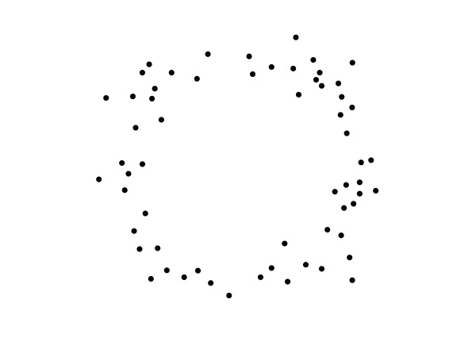

.
There are only 2 industries that call their customers, users: illegal drugs and software.
If you’re not paying for the product then you are the product.

When the 2020 US Election results came out, hopefully, you were just as confused as I was -- how did almost 50% of all voters vote Trump? Posts scrutinizing why he shouldn’t be re-elected were EVERYWHERE on social media. There was everything from gender discrimintation to his opinions on BLM to the term he coined, “China virus”. There was almost nothing positive about Trump being talked about and everyone seemed to be against him… so why did he still get so many votes?
Trump supporters likely aren’t all intrinsically supportive of all the terrible things Trump has done, they just don’t know about them and instead, see a different side of the story.

Depending on which dots you focus on in the image above, you can see either a circle or square (shown below). Neither of those options are wrong, they just don't individually tell the full story. Social media predisposes us to see either the circle or the square, rarely both.

Like we saw before, everyone’s social media feeds are different. This means that everyone takes in different information and uses this information to form opinions and make decisions. Algorithms propagate this sync gap in truth by showing you more of what you click on, so if a user starts off simply curious about what Trump has done for the economy, their feed may eventually end up being filled with pro-Trump posts. The algorithms don’t understand what is propaganda and what isn’t, or what is “fake news” and what is fact-checked. Their job is to surface relevant content to the user and do it well.
Political beliefs aren’t the only thing being polarized. So are beliefs about topics such as climate change, gender roles, COVID-19, the list goes on. A 2017 study by researchers at NYU measured the reach of half a million tweets and found that each moral or emotional word used in a tweet increased its virality by 20%, on average. With our current cultural obsession with metrics, inertia brings us to create the most click-bait-y titles as possible. However, our everyday lives are really boring. Real news titles aren’t the most interesting. But fake news titles can be as interesting as the author wants. Because of this, fake news is shared 10x more than real news, impacting a much greater portion of the population with a warped understanding of reality.
The only way to control the masses is with shared beliefs and values. This makes the people who make the algorithms for Instagram, Facebook, Youtube, etc. the most powerful people on the planet.